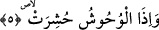
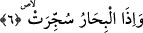

Öyle görülüyor ki; âyete bu mânâyı veren âlimler “kıyamet günü” ifâdesiyle sura
ikinci kez üflendikten sonraki zamanı anlıyorlar ya da “kıyamet” kelimesiyle kıyametin
başlangıç saatlerini anlıyorlar. Fakat kıyametin başlangıç saatlerinde insanların
ellerinde gebe develerinin bulunması mümkündür. Şu halde âyet temsîlî bir ifâde
değildir.
Bu âyet-i kerimede amellerin ve ahvalin yüklerini taşıyan nefislere işâret vardır. Yine
bu âyette yürüme esnasında kendilerinden yararlanılan “ayak develeri”nin yürümekte
kullanılmaktan vazgeçilerek terkedileceğine ve onlardan yararlanılmayacağına işâret
edilmektedir.
5. Vahşi hayvanlar toplanıp bir araya getirildiğinde,
Âyette “vahşi hayvanlar” anlamında “vuhûş” kelimesi geçiyor. Kamus’un ifâdesine
göre, “el-vahş” vahşi kara hayvanı demektir. Kelimenin tekili vahşî çoğulu ise “vuhûş”
ve “vuhşân” şeklindedir.
İbn Şeyh der ki: Vahşî demek insanlarla birlikte yaşamayan, onlara alışmayan kara
hayvanı demektir. Arapçada hiçbir insanın bulunmadığı mekana “vahş” denilir. “Vahşî”
kelimesi “ehlî” kelimesinin zıddıdır.
“Toplanıp biraraya getirildiğinde…” Vahşî hayvanlar ve insanlar -hem birbirinden
ve hem de insanlardan kaçtıkları, birarada bulunmadıkları; sahralarda ve çöllerde
dağınık bir biçimde yaşadıkları halde- her taraftan toplanıp birbirine ve insanlara
karıştıklarında... Bu “bir araya getirilme”, o günün dehşetinden dolayı olacaktır. Bazı
âlimlere göre; hayvanlar, Allah’ın adâleti ortaya çıkarılmış olsun diye kısas yapılmak
için diriltileceklerdir.
Katade’nin ifâdesine göre; herşey hattâ sivrisinek bile kısas edilmek için mahşere
getirilip haşrolunacaktır. Hayvanlar arasında hüküm verildiğinde tekrar toprak
olacaklardır. Bu hayvanlardan sâdece tavus kuşu ve bülbül gibi insanların biçimini
beğendikleri veya görünce sevinç duydukları hayvanlar hariç hiçbiri kalmayacaktır.
Hayvanlar adâlet ilkesinin gereği kısas için diriltileceklerine göre mükellef olan
insanlar ve cinler nasıl haşrolunmazlar?
Bu âyet-i kerimede Hakk cânibinden ve kuds kapısından kaçan beşerî ve tabiî
kuvvetlere işâret vardır. Bu kuvvetler helâk edilip yok edilecekler ve yaratılmaya
başladıkları ana cevherde toplanacaklardır.